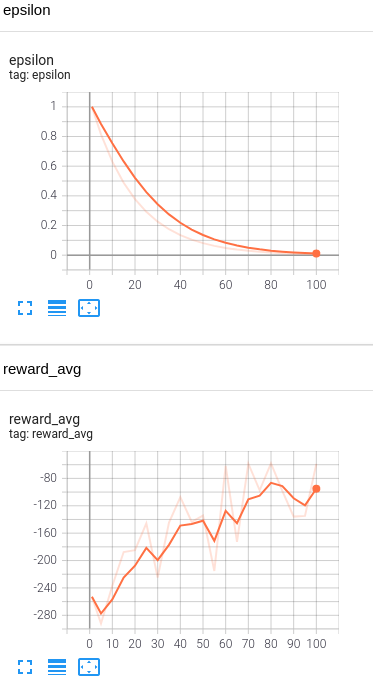
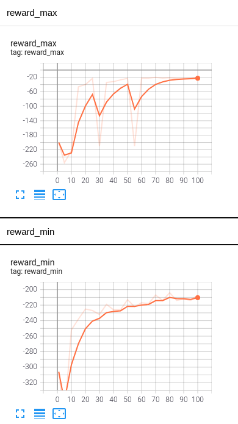
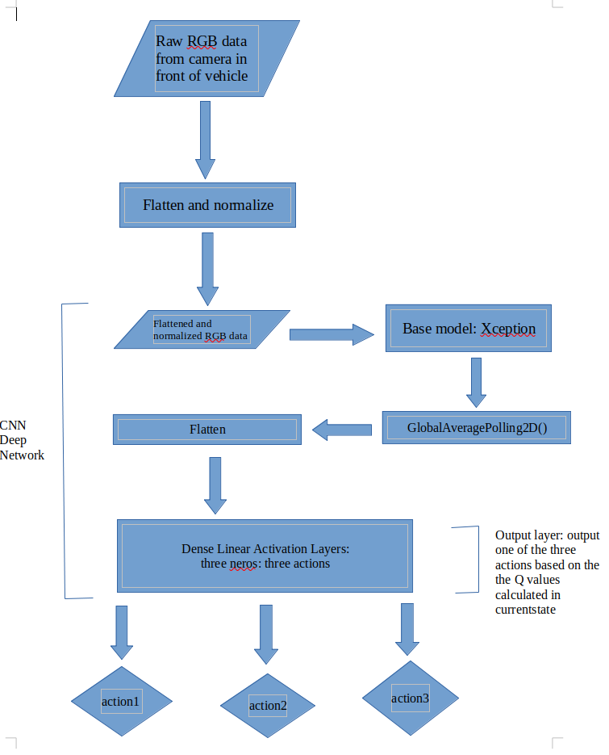
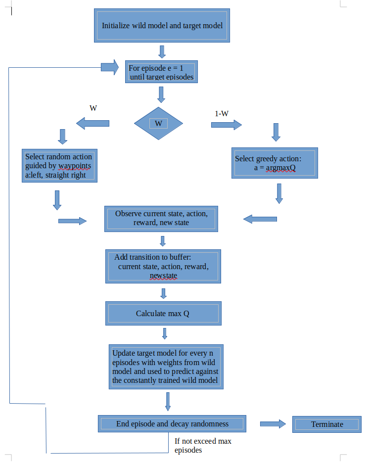
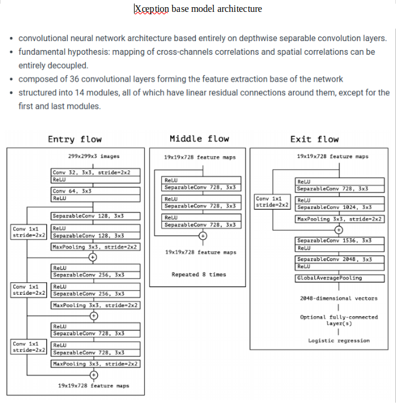

Autonomous driving with deep Q learning in Carla Urban Simulator
Key tools: Carla simulator 0.9.6, Tensorflow, Python, Keras
Github LinkProject goal:
The goal of this independent research is to create a deep Q learning model for a vehicle in Carla Urban Simulator. The target pipeline is to make spawned vehicle learn the environment and drive itself without collide under no traffic or line following rules. To save the randomness time, guided waypoints are generated near the spawned location and add them to reward function.
My major work:
- learn and construct agent (spawn the vehicle, camera, collision sensor)in Carla
- construct reward policies and overall reinforcement learning algorithms
- construct CNN deep neural network for this complex environment
- come up with waypoints ideas to save random action time
- construct the waypoints near the vehicle spawned location
Demo in the lab:
The video showed below is the agent performance in simulator using policy trained after certain episodes. If there is a collision, the episode will terminate. If there is no collision at all, episode will terminate after set episode period. The green dots in the video are waypoints generated to guide the vehicle to save random action time. Since I have no traffic and line following policies, I generated the waypoints on both sides of road.
Policy trained with 100 episodes (the best one so far)
Policy trained with 50 episodes:
Policy trained with 20 episodes:
Plots generated from Tensorboard from 100 episodes. (corresponds to the best performance):
Epsilon as first plot's y axis is randomness. All four plots' x axis are epidoes.
|  |  |
Deep Q learning algorithms:
Three actions:
- Action1: full throttle left turns
- Action2: full throttle go straight
- Action3: full throttle turn right
Rewards:
- Reward policy1: give huge penalty to collision (around -200 to 500)
- Reward policy2: give reward for driving to the watpoints location (around 50 to 100)
- Reward policy3: give reward for non-collision case (around 20)
- Reward policy4: give penalty for the speed below 40 mph (around -5)
Data:
Collision sensor:
I add the collision sensor and camera at the front of the car. The collision sensor will detect the collision and send the message. I have a list called collision_list and is initialized to be an empty list. During the process, I will decide if there is a collision based on the collision list is empty or not.
Camera:
- Camera spawned in front of the car will provide RGB data input into the DQN network.
CNN flowchart:
Reinforcement learning flowchart:
Xception base model used in CNN:
Result

Future work:
- Add pedestrians and driving vehicles (NPC) to the map
- Choose a field with one straight road , a crossing and add line following rules
- Reward parameter need to be tuned better (such as if collide, reward = tuned reward parameter)